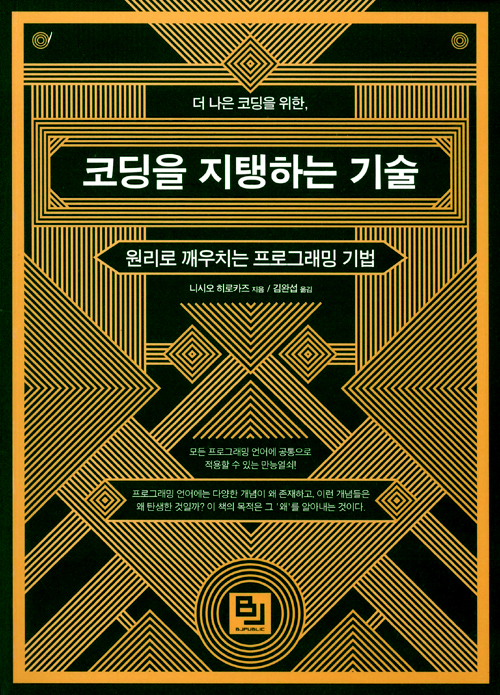

2016-07-08 09:53:31
예전에 재미있게 읽었던 책인데, 제목만 적어놓고 내용이 없었다...;
마치 프로그래머의 교양서 같은 느낌의 책으로, 짬짬이 공부는 하기 싫고(!) 뭔가 책 읽고는 싶을 때 읽어보면 재밌게 읽을 수 있을 것 같다. 게다가 책이 얇기(270페이지)까지 하다.
왜 프로그래밍 언어가 이렇게 발달해왔는지, 우리가 무심코 사용하는 프로그래밍 기법들이 어떻게 생겨났는지에 대한 얘기를 재미있게 해준다.
프로그래머라면 한번쯤 읽어볼만하다.
